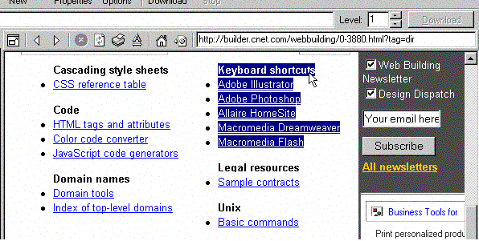

Это очень просто с Offline Explorer Pro.
Просто вставьте адрес страницы в адресную строку внутреннего браузера, затем нажмите Enter. После загрузки страницы во встроенном браузере, выделите область со ссылками, которые вы хотите загрузить, и перетащите их на дерево Проектов.
Как только Вы завершите перетаскивание, Offline Explorer создаст новый Проект с начальным URL страницы и с выбранными ссылками. Значение его уровня будет выставлено в 1, все изображения будут загружены, плюс Фильтры URL | Имя файла | Произвольная конфигурация будет включать ссылки, которые Вы хотите загрузить.
Нажмите OK и начните загрузку нового Проекта.
